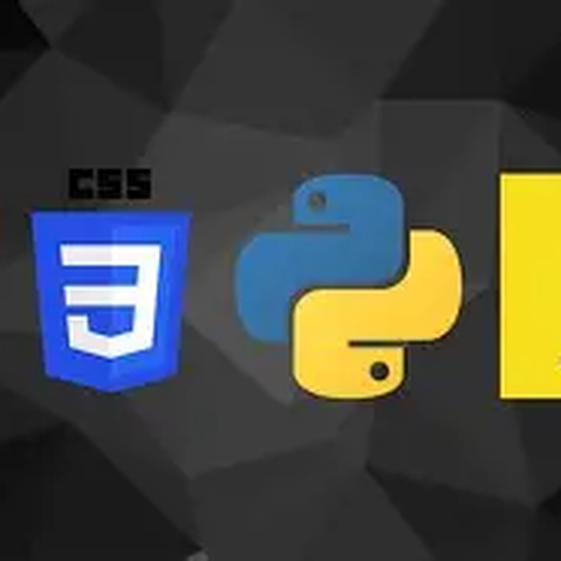
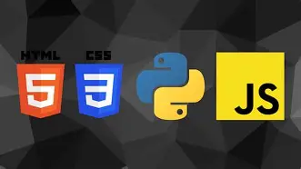
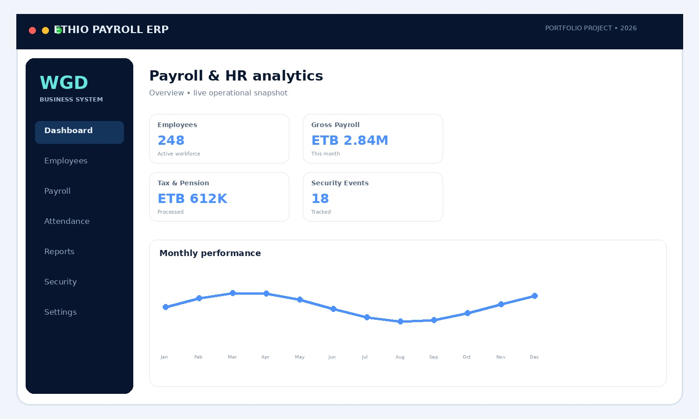
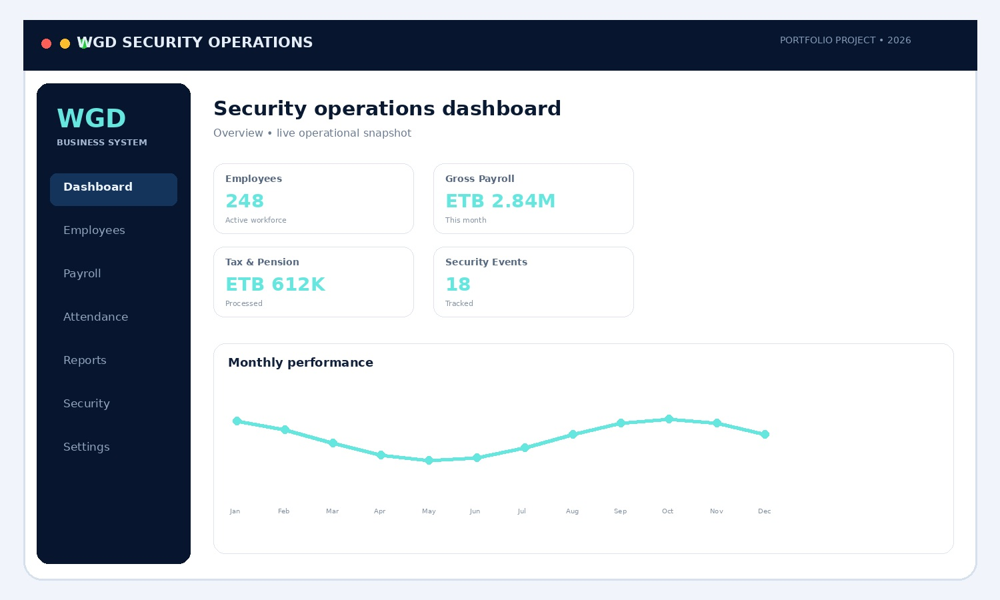
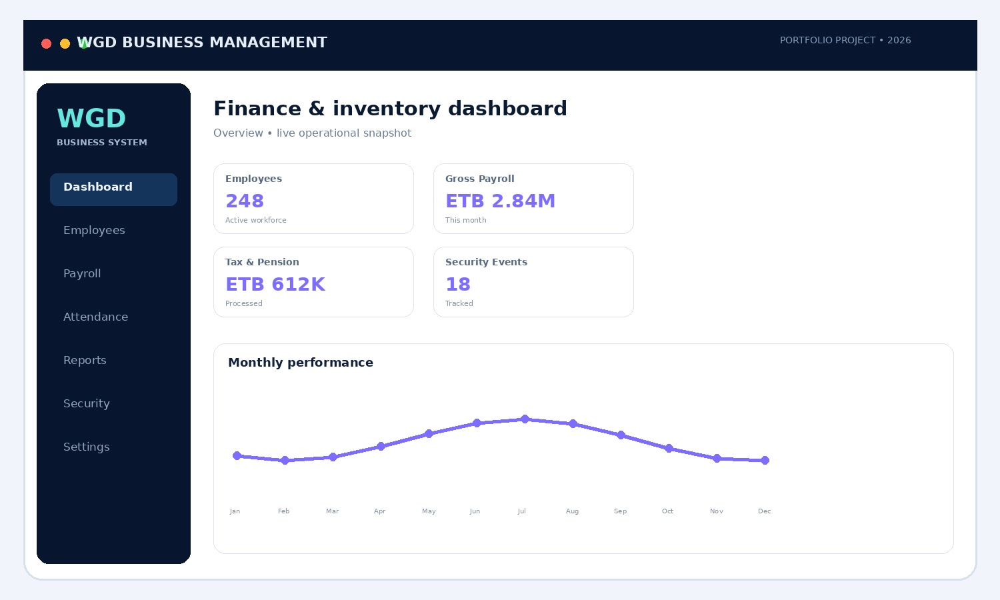
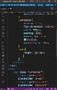
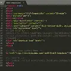

Security & Safety
Security operations, surveillance awareness, access control, emergency response and confidential information handling.

WGD.Security & Safety Professional × Web Development & Database Administration
A disciplined professional combining security operations, communication systems experience and Level IV technical training to build safer, smarter and more reliable digital operations.

TECH STACKBuild. Secure. Improve.My background brings together security operations, physical protection, communication systems, leadership and disciplined team coordination with technical training in web development and database administration.
Alert, structured and procedure-driven execution.
Web, database and business-system development.
Integrity, accountability and continuous learning.
Technical capability backed by discipline, communication and real operational experience.
Security operations, surveillance awareness, access control, emergency response and confidential information handling.
Radio and data communication environments, monitoring and operational communication support.
Responsive interfaces, HTML, CSS, JavaScript, PHP concepts and practical business web applications.
SQL/MySQL, database design, integrity, backup and recovery, integration and scalable data workflows.
Team coordination, operational readiness, responsibility, structured execution and professional discipline.
Building technology capability alongside security experience and professional development.
Enterprise HR, Payroll, Finance & Security Management System.
A full-stack business-management concept bringing together HR, payroll, attendance, leave, recruitment, performance, assets, visitors, security incidents, reporting, role-based access and database management.
Clean interfaces, reports and workflow screens.
Authentication, business logic and workflow concepts.
Transactions, indexing, backup & recovery.
Roles, permissions, activity tracking and secure access.

Professional business-system presentation mockup.

Surveillance, incident and operational monitoring concept.

Business analytics and stock-management concept.

Practical frontend styling and component-oriented interface work.

Code-focused experimentation and system development workflow.
HTML, CSS, JavaScript and Python foundations for digital solutions.
Selected code visuals from the portfolio project and technical direction.
General Wingate Polytechnic College
Available for professional opportunities, security roles, technical support and technology-enabled business projects.